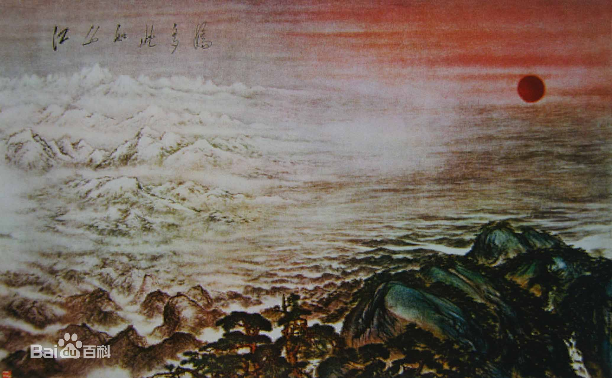

|
傅抱石（1904年10月5日-1965年9月29日），“新山水画”代表画家，原名长生、瑞麟，号抱石斋主人。生于江西南昌，祖籍江西新余，现代画家。早年留学日本，回国后执教于中央大学。1949年后曾任南京师范学院教授、江苏国画院院长等职。 他擅画山水，中年创为“抱石皴”，笔致放逸，气势豪放，尤擅作泉瀑雨雾之景；晚年多作大幅，气魄雄健，具有强烈的时代感。人物画多作仕女、高士，形象高古。著有《中国古代绘画之研究》《中国绘画变迁史纲》等。 2017年6月5日晚，傅抱石《茅山雄姿》在北京保利上拍，现场以1.45亿元起拍，1.625亿元落槌，加佣金1.87亿元成交。 人物历史傅抱石生于江西南昌的一个修伞匠人家。1921年他以第一名免试升入省立第一师范。其时他在治印之余开始读一些古代画史画论，尤其是看到石涛的“我用我法”顿开茅塞，他更欣赏石涛“搜尽奇峰打草稿”的思想。1933年3月，傅抱石东渡日本，入东京帝国美术学院，拜美术史家金原省吾为师。1935年5月《傅抱石中国画展览》在东京举行。院长正木直彦、画家横山大观等参观了展览。1935年6月，傅抱石因母病回国，1936年7月，他在南昌举办了个人画展，这是他在国内的第一次个人画展。暑假之后，应徐悲鸿之聘，任教于南京中央大学艺术系。1937年抗战爆发后，他携全家返新余故里。1938年4月，他受郭沫若的邀请，到武汉参加了三厅工作。此后又移到重庆，自此进入他艺术创作的一个高峰期。他家住沙坪坝的金刚坡，此后他常在画上题署“金刚坡下斋”。他图绘《画云台山图卷》，编撰《石涛上人年谱》，同时创作了《石涛上人像》、《大涤草堂图》，这些都反映了傅抱石艺术创作和史论研究之间的关系，以及他的艺术渊源。 从1939年以后的6年多的时间，傅抱石一方面进入了他史论研究中的高峰期，另一方面又完成了他从篆刻和史论研究到绘画创作的过渡。1942年10月，《傅抱石教授画展》在重庆举行。1944年9月，傅抱石以杜甫的乐府诗《丽人行》为题，创作了名作《丽人行》（1997年嘉德国际拍卖公司以1078万元拍出）。后来，徐悲鸿赞其画：“此乃声色灵肉之大交响”，并题：“抱石先生近作愈恣肆奔放，浑茫浩瀚，造景益变化无极，人物尤文理密察，所谓炉火纯青者非耶？” 抗战胜利后，他和全家随学校迁回南京。1947年10月，《傅抱石教授画展》在上海举行，郭沫若用“沉浸浓郁”“含英咀华”来评价画展。然而，这时国民党政府的南京已是风声鹤唳。傅抱石趁疏散人口的机会，携全家离开了南京，回到了南昌。新中国成立后，中国现代史进入了一个新的纪元。傅抱石开始迎接充满希望的新生活。 傅抱石作为江苏国画院院长，在1960年9月率领“江苏国画工作团”进行23000里的旅行写生，并由此推动新山水画在20世纪中期的发展，把50年代初开始的以写生带动传统国画推陈出新的运动推向一个历史的高潮。后来傅抱石以《煤都壮观》为代表的社会性题材，在山水融合工业题材方面的努力，已经明示了现代山水画的一种符合时代潮流的发展规律；以《镜泊飞泉》为代表的自然题材，则是北方山水在傅抱石心灵的震撼和映现。1965年逝世。 傅抱石，生于江西南昌，祖籍江西新余。少年家贫，11岁在瓷器店学徒，自学书法、篆刻和绘画。1925年著《国画源流概述》，1926年毕业于省立第一师范艺术科，并留校任教。1929年著《中国绘画变迁史纲》，1933年在徐悲鸿帮助下赴日本留学。1934年在东京举办个人画展。1935年回国，在中央大学艺术系任教。抗日战争期间定居重庆，继续在中央大学任教。1946年迁南京。 新中国成立后，曾任中国美术家协会副主席、美协江苏分会主席、江苏省书法印章研究会副会长。中国美术家协会副主席、美协江苏分会主席、江苏省书法印章研究会副会长。并当选为第三届全国人民代表大会代表、第二届政协全国委员会委员。1952年任南京师范学院美术系教授。1957年任江苏省中国画院院长。 代表作品《策账携琴》、《竹下骑驴》、《秋林水阁》、《松崖对饮》、《山水》、《云台山图（局部）》、《大涤草堂图》、《初夏之雾》、《临石涛山水》、《山水》、《万竿烟雨》、《夏山图》、《丽人行》、《将进酒》、《潇潇暮雨》、《大涤草堂图》、《山水》、《擘阮图》、《阮咸拨罢意低迷》、《晋贤图》、《金刚坡麓》、《虎溪三笑》、《山水》、《山鬼》、《山阴道上》、《毛主席《清平乐·六盘山》词意》、《抢渡大渡河》、《九老图》、《屈子行吟图》、《观瀑图》、《九歌图——湘夫人》、《九歌图——湘君》、《九歌图——少司命》、《九歌图——国殇》、《四季山水——春》、《四季山水——夏》、《四季山水——秋》、《四季山水——冬》、《平沙落雁》、《风雨归舟》、《阳朔诗意》、《秦淮小景》、《山水》、《兰亭图》、《西风吹下红雨来》、《深秋》、《龚半千与费密游诗意》、《初春》、《比加兹列宁水电站》、《古文化城克罗什》、《大特达山麓饭 店》、《克罗什古城堡》、《布拉格教堂》、《毛主席《蝶恋花·答李淑一》词意》、《雨花台颂》、《毛主席《清平乐·会昌》词意》、《拟朴渊》、《关公桥》、《韶山》、《杜甫像》、《漫游太华》、《枣园春色》、《陕北风光》、《红岩村》、《梅花山》、《黄河清》、《月落乌啼霜满天》、《全家院子》、《呵！长白山》、《天池林海》、《镜泊消夏》、《镜泊飞泉》、《待细把江山图画》、《雪景》、《二湘图》、《虎踞龙盘今胜昔》、《镜泊飞泉》、《三峡图卷》、《虎跑》、《满身苍翠惊高风》、《不辨泉声抑雨声》、《天竺》、《雪山》、《西陵陕》、《李太白像》、《少陵诗意》、《听泉图》、《听泉图》、《湘君》、《钟馗》、《井冈山》、《芙蓉国里尽朝晖》、《乾坤赤》、《长征第一桥》、《毛主席《七律·登庐山》词意》、《毛主席〈沁园春·长沙〉词意》、《湘君涉江图》、《中山陵》、《游九龙渊诗意》、《渭城曲》、《竹里馆》、《过香积寺》、《终南山》、《琵琶行》、《自河南内乱》、《问刘十九》、《后宫词》、《客至》、《登高》、《闻官军收河南河北》、《佳人》、《庐山谣》、《怨情》、《长干行》  |